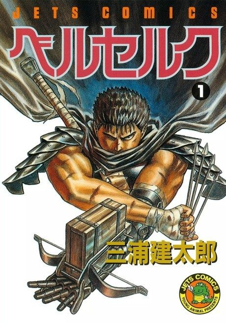

Animeter
 Anime
Anime
Manga1997 · Action, Adventure, Drama
Berserk
剣風伝奇ベルセルク
AniList8.4
Animeter—
Episodes25 ep
MangaCh. 88
Key events
These are spoilers. They stay blurred until you reveal them, one at a time or all at once.
The Black Swordsman Ep 1
- Guts kills the corrupt Baron and takes his strange egg-shaped stone, a Behelit.
- The episode ends by flashing back to how Guts's past began.
Band of the Hawk Ep 2–6
- Griffith defeats Guts in a duel and claims him for the Band of the Hawk.
- Guts rises to become one of the band's commanders.
- Guts and Griffith barely survive the immortal warrior Zodd, who warns Guts about Griffith's fate.
Court Intrigue Ep 7–10
- Griffith becomes close to Princess Charlotte.
- Griffith survives an assassination attempt.
- Guts kills the scheming Julius and also a young boy who witnessed it.
Casca and the Battlefield Ep 11–14
- Casca explains why she follows Griffith.
- Guts holds off around a hundred enemy soldiers to cover Casca's escape.
Doldrey Ep 15–17
- Casca takes the fortress while Griffith and Guts beat the enemy commanders.
- The victory ends the war.
- The Queen plots to poison Griffith.
Departure and Downfall Ep 18–19
- Griffith burns the conspirators alive.
- Guts beats Griffith in a duel to leave the band.
- Griffith sleeps with Princess Charlotte and is imprisoned and tortured.
Rescue of Griffith Ep 20–22
- Guts rejoins the Hawks and grows close to Casca.
- The band finds Griffith crippled and unable to speak after a year of torture.
The Eclipse Ep 23–25
- The God Hand offer Griffith a place among them.
- Griffith sacrifices the Band of the Hawk and is reborn as Femto.
- Guts loses an eye and an arm, and the series ends at that moment of despair.